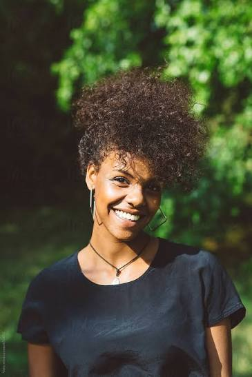

Katie started the cafe in 2011 alongside her partner, hoping to give strays and abandoned cats waiting to be put down a new home. She has 2 cats of her own, Felix and Snowflake, and they've been with her for as long as she can remember. She's always loved cats, and her mission is to give as many of them homes as possible. When they first started out, they only had about 3 cats. Now the cafe houses more than 20, and it's growing everyday.